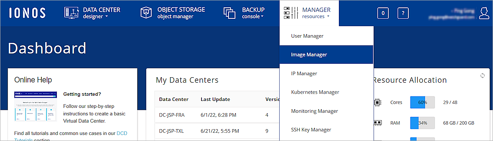

A WatchGuard FireboxV virtual machine is a Firebox model designed to run in the VMware ESXi, Microsoft Hyper-V, or Linux KVM (Kernel Virtual Machine) hypervisor environments. FireboxV uses the same Fireware OS and management software as other Fireboxes. You can use WatchGuard System Manager, Fireware Web UI, the Command Line Interface (CLI), and WatchGuard Cloud to manage a FireboxV virtual machine, just as you manage any other Firebox.
You can deploy and configure a FireboxV virtual machine on IONOS Cloud. FireboxV deployment on IONOS Cloud is supported in Fireware v12.8.1 and higher.
Before You Begin
To prepare for your installation, make sure you have a:
- FireboxV device serial number
You receive the serial number when you purchase the FireboxV virtual device. - IONOS Cloud account
- WatchGuard account
Unsupported Features
FireboxV on IONOS Cloud does not support these features:
- VLANs
- LAN Bridges
- FireCluster (Active/Passive and Active/Active)
- Drop-In Mode
- SSL VPN with Bridged VPN Traffic
Download the FireboxV Image File
WatchGuard provides a .VHD (Virtual Hard Disk) image file for the FireboxV installation. You can install this image file on IONOS Cloud.
To download the FireboxV image file:
- Go to https://software.watchguard.com.
- Select Firebox and XTM > FireboxV.
- In the FireboxV Installation Software section, download the latest Fireware VHD Template.
Upload the FireboxV Image File
The steps to upload an image file depend on which FTP client you use. The steps to upload an image file might be different from those described here. For more information about how to upload an image file, see the documentation and support resources for your FTP client.
To install FireboxV on IONOS Cloud, you must first upload the FireboxV image file. You can then use the image file to create a FireboxV virtual machine on IONOS Cloud.
To upload the FireboxV image file:
- Log in to IONOS Cloud.
The IONOS Dashboard opens. - Select Manager Resources > Image Manager.
- On the Manage Images and Snapshots page, select the FTP Upload Image tab.
The FTP Upload Image dialog box opens. - Select the region where you want to upload your FireboxV image file to.
- From the FTP Upload Image dialog box, make a note of the FTP address of a HDD Image location. You use this FTP address to upload your FireboxV image file to IONOS Cloud.
- In the Host text box of your FTP client, type the FTP address.
This guide uses the FileZilla FTP client. - In the User and Password text boxes, type your IONOS Cloud login credentials.
- Click Connect.
- From the Remote Site window of the FTP client, select the hdd-images folder.
- Upload the FireboxV image file.
-
When the image upload completes, from the IONOS Cloud Manage Images and Snapshots page, select the Image tab and click the refresh icon.
The FireboxV image file shows in the list of images.

Create a Data Center and FireboxV Virtual Machine
After you upload the image file, you can create a data center and add a FireboxV virtual machine to it.
To add a data center and FireboxV virtual machine:
- From the IONOS Dashboard, select Data Center Designer.
The Create Data Center page opens. - In the Name text box, type a name for your data center.
- From the Region drop-down list, select your region.
- Click Create Data Center.
- To create a server in your new data center, drag the Server icon to the workspace.
- Select the new server, then select the Settings tab from the configuration options that show for the server.
- In the Name text box, type a name for your server.
For information about FireboxV system requirements, see the Fireware Release Notes. - Select the Network tab.
- To configure a FireboxV external interface, click Add NIC.
- In the Name text box, type a name.
- From the LAN drop-down list, select LAN 1 > Move NIC to LAN 1.
Keep all other settings as the default values. - When the Alert dialog box opens, click OK.
- (Optional) To configure a Firebox trusted or optional interface:
- Repeat steps 8-12.
- Select a LAN other than LAN 1.
- Clear the Gateway IP will be assigned check box.
- Keep other settings as the default values.

The server now has Internet connectivity.
- Select the Storage tab.
- Click HDD.
The Create New Attached Storage dialog box opens. - In the Name text box, type a name.
- From the Image drop-down list, select Own Images.
- Select the FireboxV image file you uploaded.
- Select the Boot from Device check box.
- Click Create HDD Storage.
- Select the Storage tab.
- From the Bus Type drop-down list, select IDE.
- Click Provision Changes.
The Provision Data Center dialog box opens. - Click Provision Now.
The Provisioning Complete dialog box opens. - Click OK.
The FireboxV virtual machine automatically starts.

Ignore the NIC warning message. If you add other NICs for a Firebox trusted or optional interface in step 13, and do not connect to other peers, you might see similar messages.
Find the External Interface IP Address
To find the external IP address of the FireboxV virtual machine:
- From the IONOS Dashboard, select your data center.
- Select your FireboxV instance.
- Select the Network tab.
The external IP address of the FireboxV virtual machine shows in the Primary IPv4 drop-down list.
Use the Web Setup Wizard to Create a Basic Configuration
The Fireware Web Setup Wizard is almost the same for a FireboxV virtual machine as it is for any other Firebox. One difference is that, for a FireboxV virtual machine, you can connect to either the trusted interface or the external interface to run the Web Setup Wizard. Another difference is that the FireboxV virtual machine reboots after the wizard completes, so that it can restart with the new serial number.
If you do not complete all Web Setup Wizard steps within 15 minutes, the wizard does not save any of your settings. You must log in and start again.
The Web Setup Wizard includes a step to activate your FireboxV virtual machine. You must activate the Firebox with a feature key to get the serial number and to enable all licensed features.
To set up a basic configuration on a FireboxV virtual machine:
- Open a web browser and connect to Fireware Web UI on either the external or trusted interface.
- Connect to the external interface — From any computer on the FireboxV external network, connect to:
https://<External_IP_Address>:8080
For <External_IP_Address>, use the IP address assigned to the external interface. - Connect to the trusted interface — From any computer on the FireboxV trusted network, connect to:
https://10.0.1.1:8080
- Log in to Fireware Web UI with the default administrator account credentials:
- User Name — admin
- Passphrase — readwrite
- Complete the steps in the Web Setup Wizard. For more information, see Fireware Web Setup Wizard.
After you complete the wizard, the FireboxV virtual machine reboots with the new serial number. The setup wizard creates a basic configuration that allows outbound TCP, UDP, and ping traffic, and blocks all unrequested traffic from the external network. The configuration also uses the interface IP addresses and administrative passphrases you specified. The wizard automatically enables default policies and services with recommended settings.
If you changed the IP address of the interface you used to connect to the Fireware Web Setup Wizard, you must connect to the new address to manage the device.
For information about how to manage a FireboxV configuration from WatchGuard Cloud, see Add FireboxV to WatchGuard Cloud (Cloud-Managed).